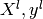
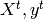
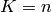

Learning the parameters of a prediction function and testing it on the same data yields a methodological bias. To avoid over-fitting, we have to define two different sets : a learning set  which is used for learning the prediction function (also called training set), and a test set  which is used for testing the prediction function. However, by defining these two sets, we drastically reduce the number of samples which can be used for learning the model, and the results can depend on a particular couple of learning set and test set.
A solution is to split the whole data in different learning set and test set, and to return the the averaged value of the prediction scores obtained with the different sets. Such a procedure is called cross-validation. This approach can be computationally expensive, but does not waste too much data (as it is the case when fixing an arbitrary test set), which is a major advantage in problem such as inverse inference where the number of samples is very small.
example_plot_roc_crossval.py, example_grid_search_digits.py, example_rfe_with_cross_validation.py,
LeaveOneOut The Leave-One-Out (or LOO) is a simple cross-validation. Each learning set is created by taking all the samples except one, the test set being the sample left out. Thus, for n samples, we have n different learning sets and n different tests set. This cross-validation procedure does not waste much data as only one sample is removed from the learning set.
>>> import numpy as np
>>> from scikits.learn.cross_val import LeaveOneOut
>>> X = np.array([[0., 0.], [1., 1.], [-1., -1.], [2., 2.]])
>>> Y = np.array([0, 1, 0, 1])
>>> loo = LeaveOneOut(len(Y))
>>> print loo
scikits.learn.cross_val.LeaveOneOut(n=4)
>>> for train, test in loo: print train, test
[False True True True] [ True False False False]
[ True False True True] [False True False False]
[ True True False True] [False False True False]
[ True True True False] [False False False True]
Each fold is constitued by two arrays: the first one is related to the training set, and the second one to the test set. Thus, one can create the training/test sets using:
>>> X_train, X_test, y_train, y_test = X[train], X[test], Y[train], Y[test]
If X or Y are scipy.sparse matrices, train and test need to be integer indices. It can be obtained by setting the parameter indices to True when creating the cross-validation procedure.
>>> import numpy as np
>>> from scikits.learn.cross_val import LeaveOneOut
>>> X = np.array([[0., 0.], [1., 1.], [-1., -1.], [2., 2.]])
>>> Y = np.array([0, 1, 0, 1])
>>> loo = LeaveOneOut(len(Y), indices=True)
>>> print loo
scikits.learn.cross_val.LeaveOneOut(n=4)
>>> for train, test in loo: print train, test
[1 2 3] [0]
[0 2 3] [1]
[0 1 3] [2]
[0 1 2] [3]
LeavePOut Leave-P-Out is very similar to Leave-One-Out, as it creates all the possible training/test sets by removing P samples from the complete set.
Example of Leave-2-Out:
>>> from scikits.learn.cross_val import LeavePOut
>>> X = [[0., 0.], [1., 1.], [-1., -1.], [2., 2.]]
>>> Y = [0, 1, 0, 1]
>>> loo = LeavePOut(len(Y), 2)
>>> print loo
scikits.learn.cross_val.LeavePOut(n=4, p=2)
>>> for train, test in loo: print train,test
[False False True True] [ True True False False]
[False True False True] [ True False True False]
[False True True False] [ True False False True]
[ True False False True] [False True True False]
[ True False True False] [False True False True]
[ True True False False] [False False True True]
All the possible folds are created, and again, one can create the training/test sets using:
>>> import numpy as np
>>> X = np.asanyarray(X)
>>> Y = np.asanyarray(Y)
>>> X_train, X_test, y_train, y_test = X[train], X[test], Y[train], Y[test]
KFold
The K-fold divides all the samples in K groups of samples, called folds (if , we retrieve the LOO), of equal sizes (if possible). The prediction function is learned using K - 1 folds, and the fold left out is used for test.
Example of 2-fold:
>>> from scikits.learn.cross_val import KFold
>>> X = [[0., 0.], [1., 1.], [-1., -1.], [2., 2.]]
>>> Y = [0, 1, 0, 1]
>>> loo = KFold(len(Y), 2)
>>> print loo
scikits.learn.cross_val.KFold(n=4, k=2)
>>> for train, test in loo: print train,test
[False False True True] [ True True False False]
[ True True False False] [False False True True]
StratifiedKFold
The Stratified K-Fold is a variation of K-fold, which returns stratified folds, i.e which creates folds by preserving the same percentage for each class than in the complete set.
Example of stratified 2-fold:
>>> from scikits.learn.cross_val import StratifiedKFold
>>> X = [[0., 0.], [1., 1.], [-1., -1.], [2., 2.], [3., 3.], [4., 4.], [0., 1.]]
>>> Y = [0, 0, 0, 1, 1, 1, 0]
>>> skf = StratifiedKFold(Y, 2)
>>> print skf
scikits.learn.cross_val.StratifiedKFold(labels=[0 0 0 1 1 1 0], k=2)
>>> for train, test in skf: print train, test
[False True False False True False True] [ True False True True False True False]
[ True False True True False True False] [False True False False True False True]
LeaveOneLabelOut
The Leave-One-Label-Out (LOLO) is a cross-validation scheme which removes the samples according to a specific label. Each training set is thus constitued by all the samples except the ones related to a specific label.
For example, in the cases of multiple experiments, LOLO can be used to create a cross-validation based on the different experiments: we create a training set using the samples of all the experiments except one.
>>> from scikits.learn.cross_val import LeaveOneLabelOut
>>> X = [[0., 0.], [1., 1.], [-1., -1.], [2., 2.]]
>>> Y = [0, 1, 0, 1]
>>> labels = [1, 1, 2, 2]
>>> loo = LeaveOneLabelOut(labels)
>>> print loo
scikits.learn.cross_val.LeaveOneLabelOut(labels=[1, 1, 2, 2])
>>> for train, test in loo: print train,test
[False False True True] [ True True False False]
[ True True False False] [False False True True]
LeavePLabelOut
Leave-P-Label-Out is similar as Leave-One-Label-Out, but removes samples related to P labels for each training/test set.
Example of Leave-2-Label Out:
>>> from scikits.learn.cross_val import LeavePLabelOut
>>> X = [[0., 0.], [1., 1.], [-1., -1.], [2., 2.], [3., 3.], [4., 4.]]
>>> Y = [0, 1, 0, 1, 0, 1]
>>> labels = [1, 1, 2, 2, 3, 3]
>>> loo = LeavePLabelOut(labels, 2)
>>> print loo
scikits.learn.cross_val.LeavePLabelOut(labels=[1, 1, 2, 2, 3, 3], p=2)
>>> for train, test in loo: print train,test
[False False False False True True] [ True True True True False False]
[False False True True False False] [ True True False False True True]
[ True True False False False False] [False False True True True True]